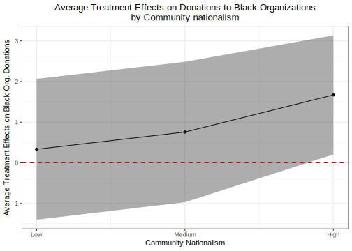

5.2 Heterogeneous Treatment Effects
Here is a short video walking through the code to plot the ATEs using plot and ggplot. (Via youtube, you can speed up the playback to 1.5 or 2x speed.)
Let’s replicate Figure 4 of the paper to study heterogeneous treatment effects. The authors compute these using a regression analysis. We will focus on the Anger vs. Control condition.

First, let’s limit the sample to just these two conditions.
angcontrol <- subset(banks, angvcon == 1 | angvcon == 0)We will look at how the effect of anger varies across the Community Nationalism Scale in the variable blackauto3. This is a three-point scale with points at 0,1, and 2. We could treat this as a numeric variable or as a categorical variable. We will first do it as a categorical variable.
## option 1- categorical
fit <- lm(blackdon ~ angvcon*factor(blackauto3), data=angcontrol)
summary(fit)##
## Call:
## lm(formula = blackdon ~ angvcon * factor(blackauto3), data = angcontrol)
##
## Residuals:
## Min 1Q Median 3Q Max
## -5.8611 -3.1750 -0.1909 3.3953 7.1579
##
## Coefficients:
## Estimate Std. Error t value Pr(>|t|)
## (Intercept) 2.8421 0.6330 4.490 1.07e-05 ***
## angvcon 0.3329 0.8840 0.377 0.707
## factor(blackauto3)1 1.0051 0.9076 1.107 0.269
## factor(blackauto3)2 1.3488 0.8231 1.639 0.103
## angvcon:factor(blackauto3)1 0.4245 1.2484 0.340 0.734
## angvcon:factor(blackauto3)2 1.3373 1.1577 1.155 0.249
## ---
## Signif. codes: 0 '***' 0.001 '**' 0.01 '*' 0.05 '.' 0.1 ' ' 1
##
## Residual standard error: 3.902 on 260 degrees of freedom
## (8 observations deleted due to missingness)
## Multiple R-squared: 0.06442, Adjusted R-squared: 0.04643
## F-statistic: 3.581 on 5 and 260 DF, p-value: 0.003779Focus on the interaction term when interpreting the results for the heterogeneous treatment effects.
## option 2- numeric
fit.numeric <- lm(blackdon ~ angvcon*blackauto3, data=angcontrol)We can then calculate the average treatment effects within each level of blackauto3 using the margins() function in R from the margins package.
- The first input is the object name for the regression model (e.g.,
fit). - The next input is a list of variables and their corresponding values for which you want to hold constant while estimating marginal effects of some other variable
- The
variableinput is then the treatment condition, or the variable for which you want to estimate the marginal effect on the outcome. Thechangethen describes the two values of the treatment condition variable that represent the control vs. treatment. In this case it was 0 vs. 1. If your treatment condition is a factor variable, you probably don’t need to specify this.
library(margins)
outp <- margins(fit, at = list(blackauto3 = c(0, 1, 2)),
variable = "angvcon", change = c(0, 1))
summary(outp)## factor blackauto3 AME SE z p lower upper
## angvcon 0.0000 0.3329 0.8840 0.3766 0.7065 -1.3996 2.0654
## angvcon 1.0000 0.7574 0.8815 0.8592 0.3902 -0.9703 2.4852
## angvcon 2.0000 1.6702 0.7475 2.2342 0.0255 0.2050 3.1354The summary is already in a nice dataframe format, which makes it easy to use ggplot.
outp.df <- summary(outp)
ggplot(outp.df, aes(x=blackauto3, y=AME))+
geom_point()+
geom_errorbar(aes(ymin=lower, ymax=upper), width=.1)+
theme_bw()+
geom_hline(aes(yintercept=0), linetype="dashed", colour="red3")+
ggtitle("Average Treatment Effects on Donations to Black Organizations \n by Community nationalism")+
ylab("Average Treatment Effects on Black Org. Donations")+
xlab("Community Nationalism")+
scale_x_continuous(breaks = c(0, 1, 2), labels = c("Low", "Medium", "High"))+
theme(plot.title = element_text(hjust = 0.5))# centers titleHere’s an alternative way to look at it with geom_line and geom_ribbon
ggplot(outp.df, aes(x=blackauto3, y=AME))+
geom_point()+
geom_line()+
geom_ribbon(aes(ymin=lower, ymax=upper), alpha=.4)+
theme_bw()+
geom_hline(aes(yintercept=0), linetype="dashed", colour="red3")+
ggtitle("Average Treatment Effects on Donations to Black Organizations \n by Community nationalism")+
ylab("Average Treatment Effects on Black Org. Donations")+
xlab("Community Nationalism")+
scale_x_continuous(breaks = c(0, 1, 2), labels = c("Low", "Medium", "High"))+
theme(plot.title = element_text(hjust = 0.5))# centers title
An alternative way to represent heterogeneity is instead of plotting the conditional average treatment effects, we can plot the raw outcomes in each condition.
We can then calculate the estimated outcomes using the prediction package in R. It works somewhat similarly to margins except we do not specify the variable for estimating the marginal effect. Instead, we fold the treatment variable into the list argument.
library(prediction)
outp2 <- prediction(fit, at = list(blackauto3 = c(0, 1, 2),
angvcon = c(0,1)),
calculate_se = T)
summary(outp2)## at(blackauto3) at(angvcon) Prediction SE z p lower upper
## 0 0 2.842 0.6330 4.490 7.129e-06 1.601 4.083
## 1 0 3.847 0.6504 5.916 3.308e-09 2.573 5.122
## 2 0 4.191 0.5262 7.965 1.652e-15 3.160 5.222
## 0 1 3.175 0.6170 5.146 2.661e-07 1.966 4.384
## 1 1 4.605 0.5951 7.738 1.010e-14 3.438 5.771
## 2 1 5.861 0.5310 11.038 2.518e-28 4.820 6.902outp2.df <- data.frame(summary(outp2))ggplot(outp2.df, aes(x=at.blackauto3., y=Prediction,
fill=as.factor(at.angvcon.)))+
geom_point()+
geom_line()+
geom_ribbon(aes(ymin=lower, ymax=upper), alpha=.4)+
theme_bw()+
ggtitle("Average Donations to Black Organizations \n by Community nationalism")+
ylab("Average Black Org. Donations")+
xlab("Community Nationalism")+
scale_fill_manual("Condition", labels=c("Control", "Anger"), values=c("orange", "dodgerblue"))+
scale_x_continuous(breaks = c(0, 1, 2),
labels = c("Low", "Medium", "High"))+
theme(plot.title = element_text(hjust = 0.5))# centers title